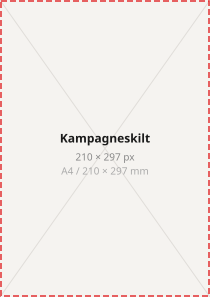

Alt hvad du skal bruge for at producere, godkende eller briefe kommunikation fra Bog & idé. Farver, typografi, logo, tone of voice og materialer — samlet ét sted.
Altid en god idé
01
Tone of Voice
Tone of voice er den stemme kunden møder i al kommunikation fra Bog & idé, uanset kanal og format. En konsistent stemme gør kommunikationen genkendelig og troværdig over tid.
Hvem vi taler som
Bog & idé taler som en passioneret og vidende ven — ikke som en institution. Vi er talkshow-værten der finder de mest interessante vinkler og gør emner, man ikke troede man interesserede sig for, til noget man vil bruge tid på.
Passionerede
Vi elsker vores produkter og brænder for at skabe læselyst og fremme kreativiteten. Vores begejstring er ægte og smittende, når vi har noget på hjerte.
Vidende
Vi ved meget, fordi vi er nysgerrige og suger til os. Vi lytter til vores publikum og deler viden uden at kloge os — aldrig belærende eller bedrevidende.
Inspirerende
Vi er ikke bibliotekaren eller pædagogen. Vi lytter og giver nye perspektiver frem for at fortælle folk hvad de skal mene. Vi finder den vinkel der fanger.
Godt selskab
Vi byder alle varmt velkommen og går op i, at alle føler sig set. Vi underholder, motiverer og giver nye perspektiver til at kaste sig ud i nye bøger og projekter.
Hvordan vi taler
Vi er ligefremme og hverdagsagtige i vores skrivestil. Vi siger tingene ligeud og skriver som vi taler med gode venner — vi vil gerne involvere og skabe dialog. Vi ser bøger og kreative produkter som noget hverdagsagtigt, ikke noget højtideligt.
Vi er ikke i undervisningsbranchen — vi er i underholdningsbranchen. Vi refererer ikke bare indholdet i en bog, men finder den mest interessante måde at fortælle om den på. Vi bruger gerne bydeform fordi vi så gerne vil skabe handling.
Tænk: "Hvordan ville B.T. sælge denne historie?" Det er ikke en opfordring til tabloidjournalistik, men til at finde den vinkel der fanger — frem for den der blot beskriver.
Vi siger / Vi siger ikke
✓ Vi siger
✕ Vi siger ikke
Spil mere. Har du glemt, hvor sjovt det er?
Vidste du at du træner din hjerne, når du spiller brætspil med dine børn?
Send mand og børn på forlænget weekend: Mr. Grey is back!
Sidste bind i Fifty Shades-trilogien.
Mere til fantasien. En stribe tusser, men også en duftende blomstereng.
Produktbeskrivelse uden vinkel.
Til alle jer, der siger, I ikke læser.
Bøger til ikke-læsere.
Personalets favorit denne uge. Ingen alternativ.
Ugens udvalgte titler.
Kan du lide sudoku, vil du elske kakuro.
Relaterede produkter.
Spar 20% på psykopater og seriemordere.
Spar 20% på krimier.
Kom i godt selskab med snigmordere, voldsforbrydere og fallerede efterforskere.
Generisk krimikampagne.
Tone per kanal
POS i butik
Kort, kontant og stemningsskabende. Kunden er fysisk til stede og skal fanges på et sekund. Ingen lange forklaringer.
"Regn udenfor. Kaffe indenfor. En god bog." — "Spørg os, vi har en mening."
Organisk SoMe
Plads til personlighed og redaktionel stemme. Tag stilling, stil spørgsmål og involver. Undgå produktgrid uden kontekst.
"Vi har valgt tre bøger til din ferie. Du behøver ikke vælge selv." — "Trump hader den. Gør du?"
Annoncer (betalt)
Mere direkte og handlingsorienteret end organisk, men stadig forankret i en situation eller et behov. Tag udgangspunkt i en konkret situation.
"Ferielæsning: let, spændende, umulig at lægge fra sig." — "Tre sikre valg under 200 kr."
E-mail & nyhedsbrev
Den mest personlige kanal. Tonen er varm, direkte og uden kampagnesprog. Skriv som om boghandleren selv sender mailen.
Emnefelt: "Fordi du læste [titel], tror vi du vil elske denne." — "Tre bøger til din ferie, udvalgt til dig."
02
Visuel Identitet
Logo
Logoet er Bog & idés primære identitetsmarkør. Det bruges konsekvent på tværs af alle materialer og flader.
Sort — til lys baggrund
Hvid — til mørk baggrund
Kvadrat — facader & butiksafmelding
✓
RespektafstandFrirum svarende til O'ets mål på alle sider — medmindre logoet er en aktiv del af et grafisk design.
✓
MinimumsstørrelseLogoet bruges aldrig mindre end 10 mm i den smalleste dimension ved print.
✕
Ingen omfarvningLogoet bruges kun i sort på lys baggrund, hvid på mørk baggrund, eller hvid på rød facade-version.
✕
Ingen forvrængningLogoet skaleres altid proportionalt — aldrig strakt, skævt eller roteret.
Sign-off'en er den faste sætning der afslutter vores kommunikation og skaber genkendelighed over tid. Det er ikke et brand claim — det er en fast afslutningstekst der bruges konsekvent, ligesom "Just Do It" hos Nike.
Altid en god idé
Purpose-niveau
Refererer til vores grundlæggende overbevisning: gode valg, bøger, gaver og kreative produkter er altid en god idé — fordi de skaber nærvær og mening i hverdagen.
Positions-niveau
Er konklusionen på vores løfte til kunden: vi hjælper dig med at vælge rigtigt — og det valg du tager med hjem er altid en god idé.
Reglen: Sign-off'en optræder altid med klammerne — aldrig uden. Klammerne kan bruges uden sign-off'en, men sign-off'en optræder aldrig alene.
Klammerne
Klammerne er Bog & idés vigtigste grafiske brand asset. De binder kommunikationen sammen på tværs af alle formater og kanaler og optræder altid med sign-off'en "Altid en god idé".
Rød version — standard
Hvid version — når rød dominerer materialet
✓ Bruges til
Brandkampagner
Lancering af nye tiltag
CSR-aktiviteter
Servicebudskaber
✕ Bruges ikke til
Taktisk priskommunikation
Prisskilte og prissplash
Rene produktlister
Størrelse
5%
af formatets smalleste side Eks.: 120 mm → klammer = 6 mm
Afstand til kant
75%
af klammens størrelse Eks.: 6 mm klammer → 4,5 mm afstand
Farve
Rød som udgangspunkt. Hvid hvis rød allerede dominerer.
Outdoor-regel
Ensartet
Klammer på vinduer placeret side om side skal have ens størrelse.
Farvepaletten er bygget op om to primære og fire sekundære farver. Den røde farve er brandfarven og bærer identiteten på tværs af alle formater.
Primær
Bog & idé Rød
#e02e31
Brandfarven. Bruges markant når vi har noget på hjerte.
Primær
Hvid
#FFFFFF
Tekster, prissplash og designelementer.
Primær
Sort
#000000
Tekster, prissplash og designelementer. Altid 100% sort.
Sekundær
Bog & idé Beige
#feede0
Dynamik og variation i kampagner. Bruges i Kundeklub-design.
Sekundær
Bog & idé Lys Rød
#f7c3c7
Sekundær kampagnefarve.
Sekundær
Bog & idé Lys Blå
#b4dcf6
Sekundær kampagnefarve.
Sekundær
Bog & idé Blå
#00375c
Sekundær. Bruges bl.a. til Topskilt (Bestseller).
Bemærk 2026-opdatering: Den røde brandfarve er revideret fra #e73132 til #e02e31. Alle nye materialer bruger den reviderede røde. Opdatér eksisterende materialer ved næste produktion.
To skrifttyper. Ét princip: Velo sætter tonen, Muller leverer indholdet.
Brand-font · Budskaber
Velo Serif Display Bold
Bruges på grafiske materialer til budskaber om branding, salg og kampagner. Kun på overskriftsniveau — aldrig til brødtekst.
Aa Bog & idé — BoldBold 700
Aa Bog & idé — MediumMedium 500
Brand-font · Information
Muller
Bruges på materialer med et informativt niveau — brødtekster, wayfinding, etiketter og steder med meget tekst.
Aa Bog & idé — LightLight 300
Aa Bog & idé — RegularRegular 400
Aa Bog & idé — BoldBold 700
💡
Grundprincippet
Velo Serif Display Bold bruges udelukkende til overskrifter, kampagnebudskaber og salgstekster på grafiske materialer. Muller bruges til alt indhold der skal læses — brødtekster, produkttekster, navigation og information. Bland dem aldrig på samme tekstniveau.
Eksempel — Produkttekst opsætning
Anna Jansson
SKYGGEBARN
Normalpris 199,95
People'sPress
14995
Muller Regular — 7,2/8,5pt
Muller Bold — 7,2/8,5pt — Caps
Muller Regular — 7,2/8,5pt — Tracking –10
Muller Bold — 7,2/8,5pt
Muller ExtraBold — 22/22pt — Tracking –40
Billedstil
Billeder fra Bog & idé skal kommunikere nærvær, varme og menneskelighed. De skal virke autentiske og have kontrast og farveidentitet der bidrager til et markant visuelt udtryk med tyngde.
Fordybelse og roEn person der læser alene, opslugt af en bog
Samvær og nærværForælder der læser højt for barn, venner der deler en bog
Kreativitet i gangFamilie der tegner, maler eller bygger sammen
HverdagsstemningBogen på natbordet, koppen kaffe ved siden af
✓ Vi bruger
Autentiske, ikke-opstillede motiver
Billeder med nærvær og menneskelig varme
Stærk kontrast og tydelig farveidentitet
Motiver der fortæller en mini-historie
Naturligt lys og ægte stemning
✕ Vi undgår
Intetsigende eller generiske stockfotos
Kunstige eller for opstillede motiver
Billeder der kunne tilhøre enhver anden retailer
Overly-polerede, kliniske produktfotos som eneste billede
Emotionsløse flatlay-opstillinger
Kundeklub
Kundeklubben er gratis at være medlem af og giver adgang til eksklusive fordele. Det visuelle system er defineret og adskiller sig bevidst fra den generelle brand-kommunikation.
Visuelt system
VELKOMMEN I KLUBBEN
Det koster ikke noget, og du får masser af medlemsfordele. Se mere og meld dig ind på bog-ide.dk
Rød ramme — beige boks
Designet er defineret af den røde ramme (#e02e31) omkring en beige boks (#feede0) med hvide klammer indeni. Denne kombination bruges udelukkende til Kundeklub-materiale.
"KLUBBEN" altid i rød
Ordet KLUBBEN skrives altid med rød farve i overskriften. "VELKOMMEN I" er i sort/neutral. Eksempel: "VELKOMMEN I KLUBBEN".
Hvide klammer
Klammerne inde i Kundeklub-designet er altid hvide — de er placeret på den beige baggrund og optræder uden "Altid en god idé" sign-off'en.
Kun til klubben
Ikonerne for de tre klubfordele (fri fragt, tilfredshedsgaranti, returpant) bruges udelukkende i Kundeklub-kommunikation. Farverne på ikoner tilpasses farvepaletten.
De tre eksklusive klubfordele
Fri Fragt
Altid fri fragt til nærmeste pakkeshop eller Bog & idés butikker ved handel i webshoppen.
90 Dages Tilfredshedsgaranti
På alle børne- og ungdomsbøger. Rammer bogen ikke plet, kan du bytte den inden 90 dage.
Giv din Bestseller Videre
Aflever din bestseller inden 3 måneder og få et tilgodebevis på 25% af bogens pris.
03
Priskommunikation
Priskommunikation adskiller sig bevidst fra brandkommunikation. Den er rent taktisk og følger et stramt visuelt system — ingen klammer, hvid baggrund, sort tekst.
Standard pris
Anna Jansson
Skyggebarn
19995
Tilbud
Anna Jansson
Skyggebarn
199,95
14995
SPAR 50.–
Frit valg
FRIT VALG
6995
2 bøger: 150.–
SPAR 30.–
Hvid baggrund — sort tekstPrisskilte og prissplash bruger altid hvid baggrund og sort tekst. Klammerne bruges ikke. Simpelt hierarki: produkt → pris → evt. kort tekst.
Normalpris vises tydeligtNår en vare er nedsat, angives normalpris tydeligt ved siden af kampagneprisen — aldrig skjult eller nedtonet.
SPAR frem for procentRabat kommunikeres som "SPAR [beløb]" frem for procentsatser — medmindre procenten er særligt fordelagtig og mere kommunikativ.
Kampagnefarverne tilpassesFarverne på prissplash tilpasses de aktuelle kampagnefarver fra paletten. De viste eksempler er grundformen.
04
Assets & Materialer
Hvert kommunikationsformat har en specifik opgave. Når vi forstår hvad hvert format er bedst til, undgår vi materialer der forsøger at løse to opgaver på én gang — og dermed løser ingen af dem optimalt.
Butikskommunikation
En kampagne uden uro har ingen emotionel indgang. En uro uden profilskilt efterlader kunden med en stemning men ingen handling. De to formater arbejder altid sammen.
RegisterEmotionelt og atmosfæriskOpgaveSkaber den overordnede stemning og etablerer kampagnens universIndholdKey visual · Kampagnebudskab · Klammer · "Altid en god idé"ReglerIngen produktpriser. Ingen produktlister.
"Sommerferie, endelig tid til fordybelse."
Profilskilt
A4 · 210 × 297 mm
RegisterSituationelt og redaktioneltOpgaveKuratering og anbefaling — hænger tematisk sammen med uroenIndholdKey visual · Inspirationstekst · Konkrete titler med kort beskrivelse · KlammerReglerIngen priser.
"Lette bøger til kufferten. Tre vi ikke kan holde op med at anbefale."
Gadestander / Plakat
A2 · 420 × 594 mm
RegisterEmotionelt og atmosfæriskOpgaveBrandbudskab og stemningsskaber — bruges primært ved indgang og i vinduerIndholdStort atmosfærisk billede · Ét budskab · Klammer · "Altid en god idé"ReglerÉt budskab per plakat.
"Din perfekte strandbog venter her."

Kampagneskilt
A4 · 210 × 297 mm
RegisterSituationelt og handlingsorienteretOpgaveFremhæver kampagnebudskab og skaber taktisk opmærksomhedIndholdKampagnebudskab · Klammer · Key visual eller kurateringselementer
"20% på alle krimier denne uge."
Prisskilt
A4 · 210 × 297 mm
RegisterHandlingsorienteret — rent taktiskOpgaveProdukt- og prisinformation direkte koblet til konkrete produkterIndholdProdukt · Pris · Kort produktinformationReglerHvid baggrund. Ingen klammer. Ingen kampagnebudskaber.
Øvrige butiksformater: Hyldemarkør (stor/lille) — genre- og nummermarkering på bestseller-reolen · Hyldesvirper — opmærksomhedsskabende fra siden af reolen · Topskilt — markerer bestseller-reolen i loftet (mørkeblå baggrund) · Lysdug (90×65 cm) — til bestsellerlisten på bord eller podie · Podie — redaktionel scene for kuraterede opstillinger.
Digitale formater
Bannerad (display)
300×250 · 728×90 · 160×600 px
RegisterHandlingsorienteretOpgaveKonverterer eksisterende interesse til handlingReglerÉt budskab · Tydelig CTA · Ingen støj · Læses på under 2 sekunder
"Find din strandbog. 3 anbefalinger fra vores boghandlere."
Annonce, betalt social
1080×1080 · 1080×1920 px
RegisterSituationelt og præcistOpgaveSkaber efterspørgsel ved at møde kunden i en konkret situationReglerTag udgangspunkt i en situation. Undgå generiske slogans. Billede understøtter situationen.
"Ferielæsning: let, spændende, umulig at lægge fra sig."
Organisk SoMe
1080×1080 · 1080×1350 · 1080×1920 px
RegisterRedaktionelt og personligtOpgaveBygger relation, personlighed og mental tilgængelighed over tidReglerTag stilling. Undgå produktgrid uden kontekst. Involver og skab dialog.
"Vi har valgt tre bøger til din ferie. Du behøver ikke vælge selv."
E-mail, kundeklub
600 px bred · variabel højde
RegisterPersonligt og relationeltOpgaveStyrker relationen og skaber gentagende adfærd baseret på kundekendskabReglerSkriv som om boghandleren selv sender mailen. Personaliser på baggrund af adfærd.
Emnefelt: "Fordi du læste [titel], tror vi du vil elske denne." · Preheader: "Vi har gjort valget nemt."
E-mail, bred udsendelse
600 px bred · variabel højde
RegisterSituationelt med handlingsorienteret lagOpgaveSkaber efterspørgsel og driver trafik. Kan konvertere ikke-medlemmer til klubmedlemmer.ReglerSamme grundstruktur som klubmail, men med CTA der inviterer til medlemskab.
Emnefelt: "Klar til ferie? Vi har valgt for dig." · Preheader: "Tre lette læsninger du ikke lægger fra dig."
05
Kampagneskabelon
En veldefineret kampagnestruktur sikrer at alle assets arbejder i den samme retning og at eksekveringen kan skaleres effektivt på tværs af formater. Enhver kampagne tager udgangspunkt i disse fem elementer.
1
Entry point
Hvilken situation aktiverer kampagnen? Ét entry point per kampagne. Eksempler: "Jeg skal finde en gave" · "Jeg vil i gang med at læse" · "Jeg vil koble af i ferien" · "Mit barn skal starte i skole".
2
Budskab
Hvad er det ene budskab kampagnen kommunikerer? Det skal kunne siges i én sætning. Eksempel: "Vi hjælper dig med at vælge den perfekte julegave — udvalgt af vores boghandlere."
3
Register
Emotionelt, situationelt eller handlingsorienteret? Afgøres af de kanaler kampagnen lever i. Upper funnel = emotionelt. Mid funnel = situationelt. Lower funnel = handlingsorienteret.
4
Assets
Hvilke formater produceres? Hvert format beskrives med budskab og billedretning. Husk: uro + profilskilt hænger altid sammen. Ingen uro = ingen emotionel indgang.
5
Genbrug
Hvilke elementer kan genbruges på tværs af formater og i fremtidige kampagner? Key visuals, tekstelementer og kuraterede produktlister bør designes med genbrug i mente.
Årshjul og sæsonspecifikke paletter med kampagneperioder og fuldt briefingformat dokumenteres løbende og tilføjes her. Kontakt Marketing for seneste version.
{kind=link}
{kind=link}
{kind=link}
{kind=link}


{kind=link}
{kind=link}